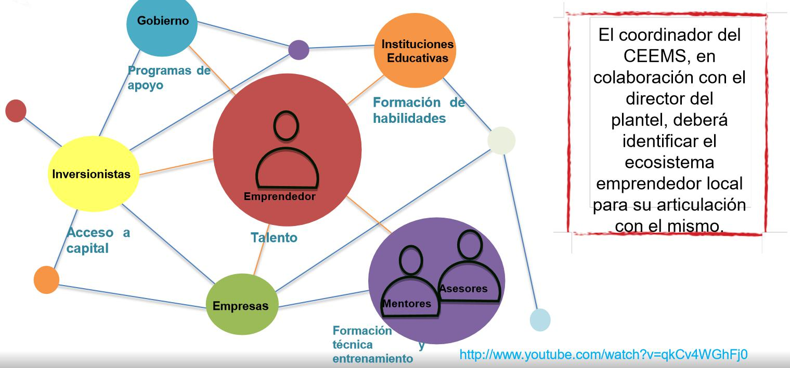

El segundo componente es el espacio denominado Centro de Emprendedores (CEEMS) Es el ámbito del plantel donde se busca fortalecer las capacidades institucionales para impulsar el emprendimiento y la vinculación con el sistema emprendedor. El centro Emprendedor de la Escuela Politécnica, es donde hay formación de docentes, practicas, concursos y clubs de emprendedores e intercambio de experiencias.
PROMOVER. Ambientes emprendedores mediante campañas de difusión, eventos, charlas,etc. FORMAR. Docentes Facilitadores (cultura Emprendedora ) y estudiantes (Módulo semilla y Módulo Líder ) EJERCITAR. Prácticas, pasarela, concurso y clubes de emprendedores. IMPULSAR. Vinculación con el ecosistema emprendedor y la comunicación con los demás centros a través de la RED, permitiendo el intercambio de experiencias para el cumplimiento de los objetivos y metas del programa..
Además del proceso de aprendizaje activo y teórico la SEP otorga BECAS a fin que los alumnos de la Escuela Politécnica logren consolidar planes de emprendimiento sobresaliente y fortalecer sus competencias emprendedoras. Así se consolida un ambiente emprendedor, fortalecido con el programa de estímulos. Para mayor información consultar: www.becasmediasuperior.sep.gob.mx
El cuarto componente del modelo conecta al estudiante con el sistema emprendedor, identifica y efectúa ejercicios de vinculación efectiva con instituciones relacionadas con el apoyo, fomento, financiero, inversión y formación emprendedora, con el fín de que el estudiante pueda continuar con el desarrollo de sus competencias y cristalizar su plan emprendedor. redpuntos.inadem.gob.mx
